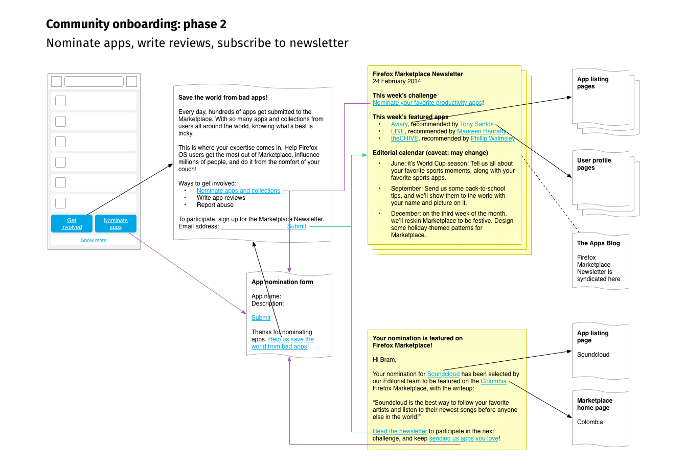
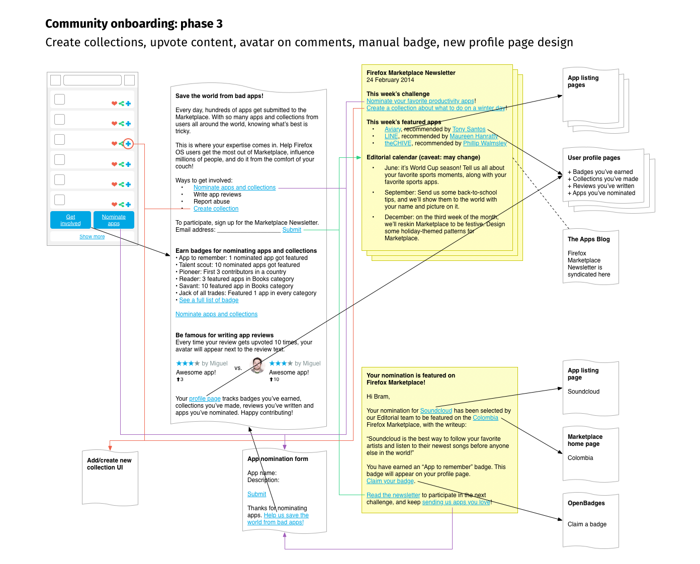
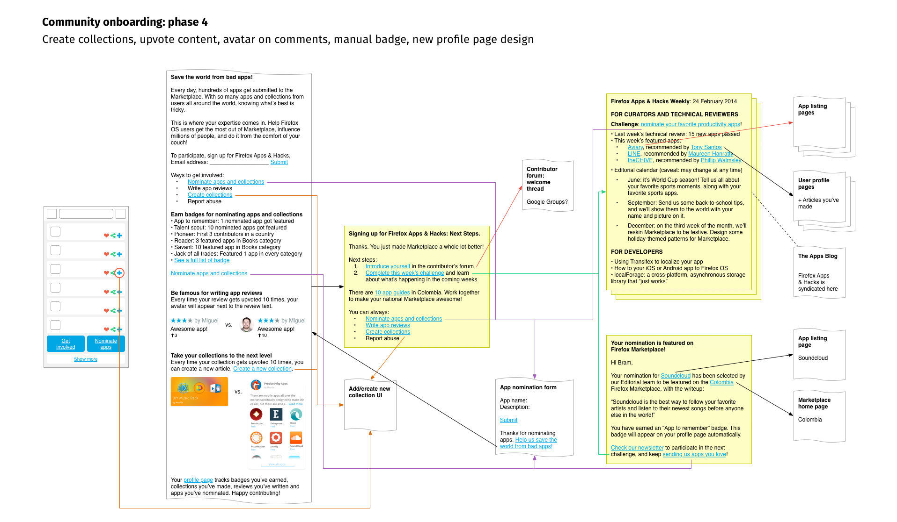

---
layout: MarketplaceUXSpec
multipage: false
---	

<div class="container">
	<h1>Community Onboarding Phases (OLD)</h1>

	<!-- Pagination. If you have more than one page, set the multipage variable in the Frontmatter to true. Editing the pagination code happens in /_includes/homePagination.html. -->
	{% if page.multipage %}
		{% include homePagination.html %}
	{% endif %}

	<div class="col-sm-6 col-md-6 col-lg-5 col-lg-offset-1">
	
	  <h3>Phase 2</h3>
	  
	  

	  <h3>Phase 3</h3>
	  
	  	  
	  
    <h3>Phase 4</h3>
	  
	  	  
		
	</div>
	
		
